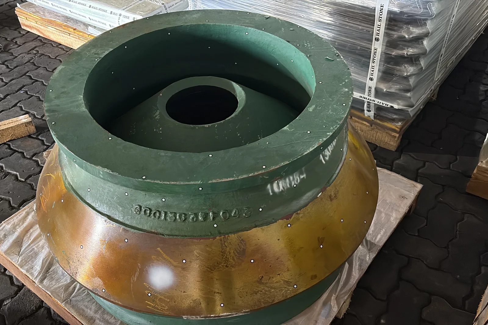
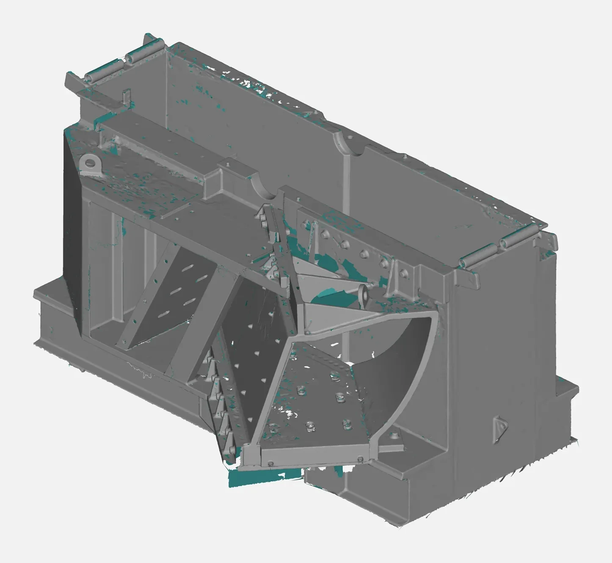
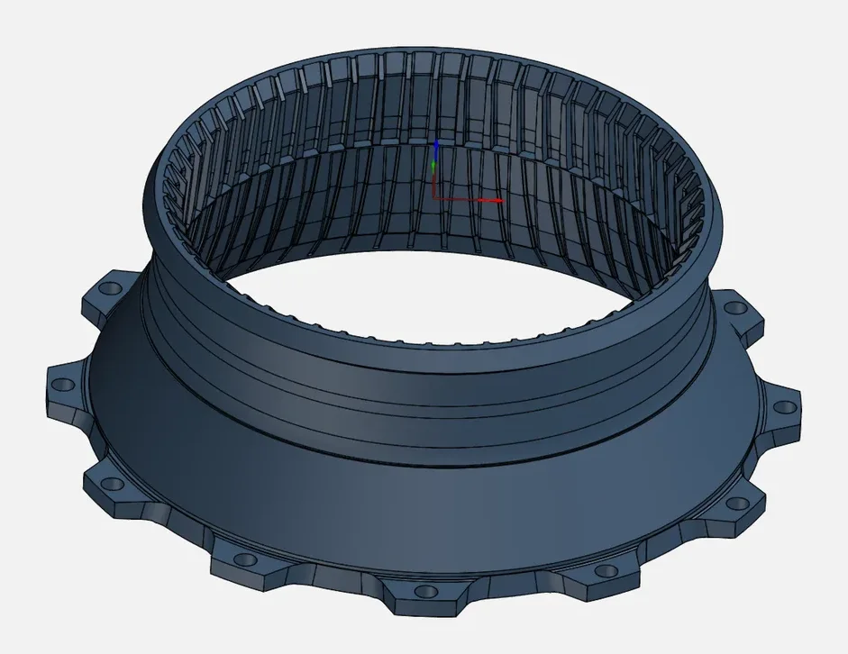
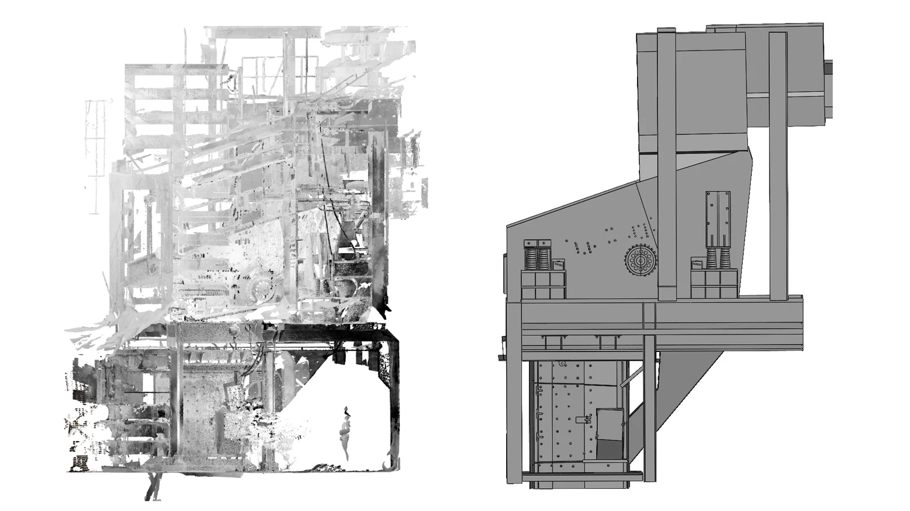

Crushers live hard lives. Liners, mantles, concaves, throats and chutes are designed to wear, and they do, constantly. For mines, quarries, aggregate producers and cement plants across India and the Gulf, reliable wear-part supply directly affects throughput and cost per tonne.
Yet many operators still depend on a single OEM for every replacement, often with long lead times, or on local foundries working from worn samples and rough sketches. 3D scanning and reverse engineering give plants more control.
The wear-part challenge
- OEM dependency: original parts can be expensive and slow to arrive, especially for older crusher models
- Worn samples: by the time a liner is replaced, its profile no longer represents the original design
- Fit problems: pattern-shop copies without accurate data can fit poorly, causing gaps, poor nip angles, early cracking or downtime during installation
- No wear data: without measurements, it's hard to know whether a new alloy or profile actually lasts longer
How reverse engineering helps
Recreate the original profile
We 3D scan the worn part, and where possible a new or less-worn part or the mating surfaces (for example the frame or bowl the liner sits in). Using these references, the engineer rebuilds the original design profile in CAD, restoring the geometry that wear removed.


Get accurate patterns and castings
With a clean CAD model, a foundry can produce patterns, cores or 3D-printed sand moulds that match the original fit. Because the data is digital, it can be shared with several foundries for competitive quotes.

Measure and track wear
Scanning a liner when it's installed and again when it's removed creates a wear map: a colour comparison showing exactly where material was lost and how much. Over several cycles, this helps you:
- Compare alloys and suppliers objectively
- Adjust profiles to put material where wear is highest
- Plan replacements before failure rather than after
Improve the design
Once the part exists in CAD, engineers can thicken high-wear zones, change lifting features, or adapt the profile, then test the change with the next set of scans.
Beyond liners: the wider plant
The same approach works across processing plants:
- Chutes, hoppers and skirts that wear or need redesign
- Screen frames and vibrating screen components
- Pump casings and impellers in slurry and water circuits
- Plant layouts: Revit models of crusher buildings and conveyor structures for upgrades, built from point cloud data with Scan to BIM

What we need from you
- Access to the part (removed or installed) or permission to scan on site
- The crusher make and model, and the part's position
- Any existing drawings, photos of a new part, or OEM part numbers
- Your goal: a replacement copy, an improved design, or wear tracking
Mining and crushing support in India and the UAE
From Coimbatore, we support quarries, cement plants and mining operations across South India and beyond. For UAE and GCC aggregate and construction-materials producers, we can arrange on-site scanning. Learn more about reverse engineering or WhatsApp us your part photos.